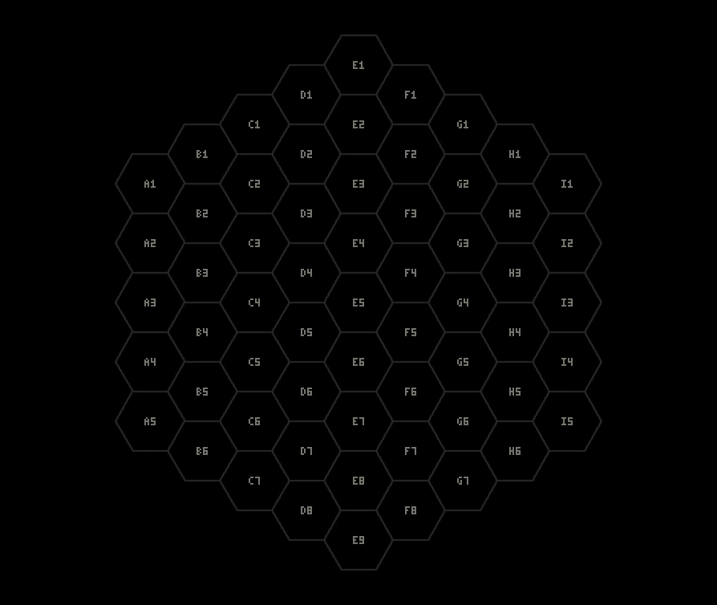

Monster Fusion Masters began as an original physical strategy game. After years of ideas and delays, it gradually became a digital game playable in a browser.
- TIMELINE
From tabletop to online play

The rule foundation: a 61-space hex board, shown in the current digital version.Digital development added real-time rooms and AI opponents.
The creator wanted to turn the tabletop game into a digital and online game. The technical and financial barriers of game programming and multiplayer servers led to attempts to seek outside development help, but the project remained on hold for years.
PROJECT REVIVAL / AI-ASSISTED DEVELOPMENT
Restarting with Codex
As AI-assisted programming tools matured, the creator returned to the project. Codex helped implement the existing design, analyze code, debug and gradually refactor the software. The original game design, rules and gameplay were not created by Codex.
BROWSER PROTOTYPE / DIGITAL GAME
The first playable digital version
The board display, tile rotation and placement, turns, closure scoring, hand and controls were implemented, making it possible to play on a computer without the physical board.
ONLINE / MULTIPLAYER
Real-time online multiplayer
Accounts, rooms, synchronized player state and spectating were added over time. The production online service uses Cloudflare Workers and Durable Objects. These core implementations are not included in the public Showcase.
COMPETITIVE / RANKED & AI
AI and competitive play
Computer opponents, Master AI, Ranked rating-based matchmaking, seasonal rankings, knockout tournaments, replays and a tutorial helped the standalone prototype grow into an ongoing online competitive game.
ONGOING / CONTINUED DEVELOPMENT
Continuing to improve
Work continues on rule presentation, controls, performance, AI and multiplayer quality. The original creator continues to decide the game's design and direction. Codex is a collaborative software development tool.
ORIGINAL DESIGN / DESIGN RATIONALE
Why 61 spaces and this tile distribution?
The board size, distribution of tile types, and scoring for closed regions were designed around one goal: giving players enough time and space to build larger monster shapes.
BOARD SIZE / 61 CELLS
Why a 61-space board?
Early tabletop tests used a board with one fewer ring, totaling 37 spaces. Matches ended too quickly, and tiles soon reached the boundary, leaving little room to extend connections into larger shapes.
The 61-space board was chosen to aim for matches lasting roughly a dozen or more minutes, while leaving enough space for larger formations. It is a balance between match length and room for strategy.
TILES & SCORING
Why distribute the tiles this way?
Tile types are not distributed equally. Their proportions were designed together with the closure-scoring system to encourage players to build larger regions rather than repeatedly close small ones.
The scoring deliberately rewards larger closed regions more efficiently than splitting them into several smaller ones. Waiting to close a region, however, also risks opponent interference, running out of space, or failing to complete it.
The strategic choice: Secure the points from a small region now, or keep extending it for a larger reward? The 61-space board, tile mix, and scoring system were designed to make that trade-off meaningful.
Monster Fusion Masters' core concept, board design, tile rules, scoring and original physical edition were completed before modern AI-assisted development. Codex later participated in planning, implementation, debugging and process improvements for the digital version. This does not change the authorship of the original game design.
The original gameplay core: connect tiles, close regions and score by covered spaces.- REFERENCES